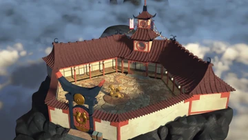
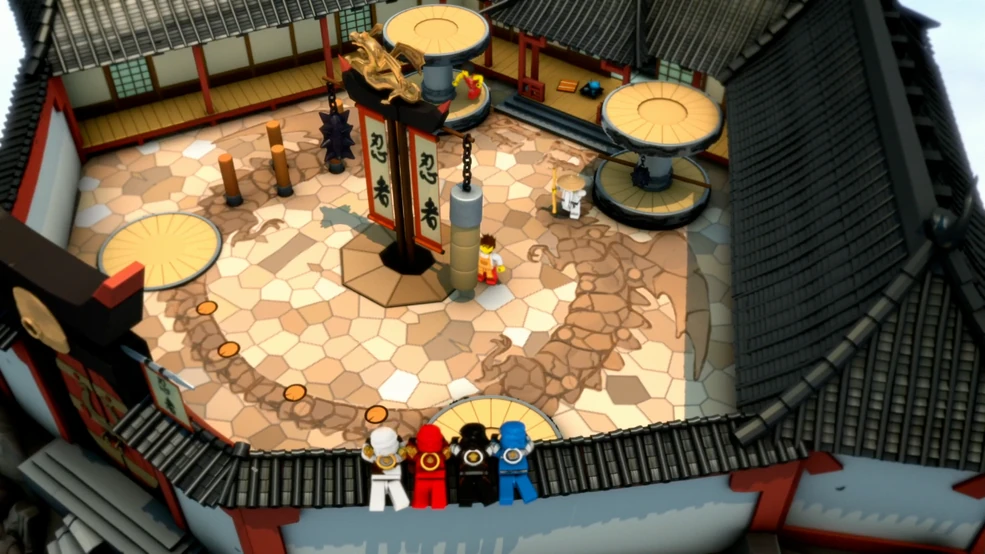
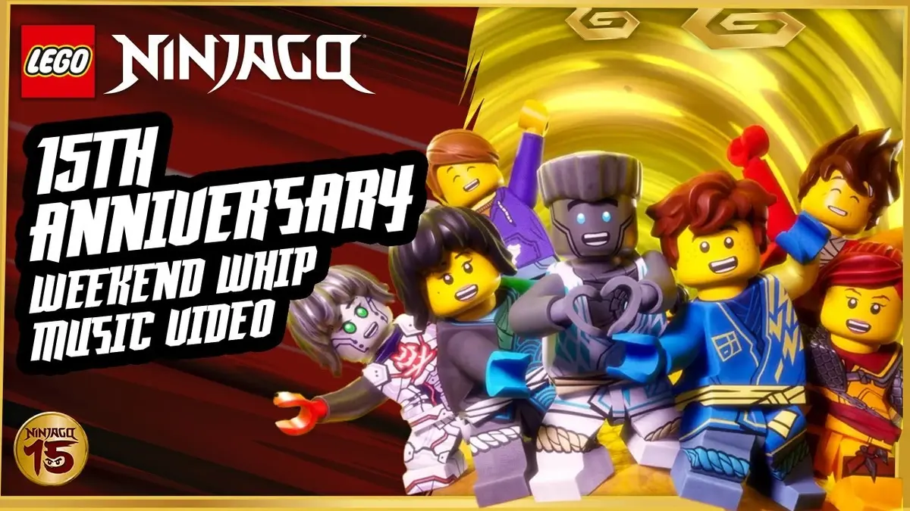
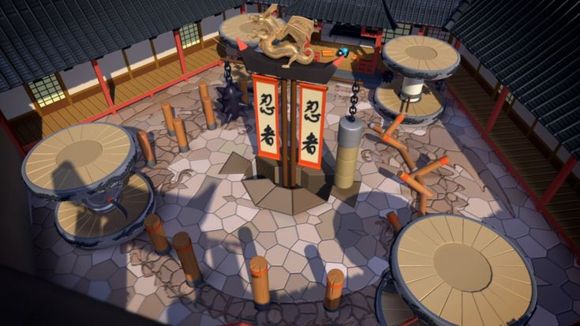
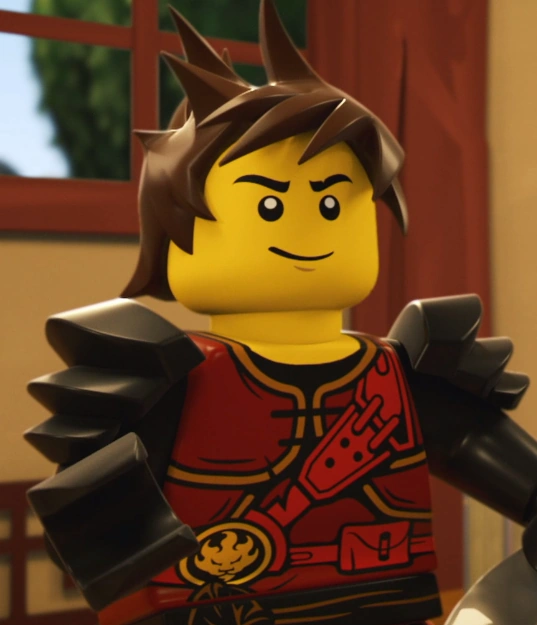

Dream Destination
My dream destination is the Monastery from Lego Ninjago!
The Monastery is the place where Ninjas live and train with Master Wu.

-This is the very scene where Kai was training to become a ninja.

- In this video, the Monastery is visible as the Ninja sing the Weekend Whip.

-This is the exact training place Master Wu would take me to become a spinjutsu master.

-This is Kai, my favorite ninja. He would teach me how to harness the elemental power of fire. (and Rizz)
